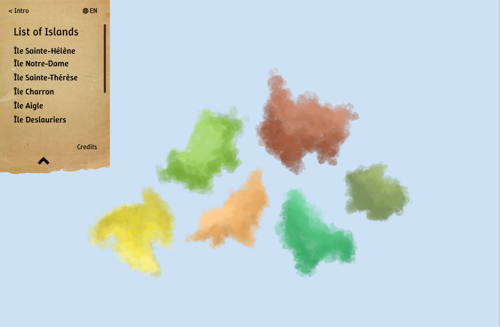
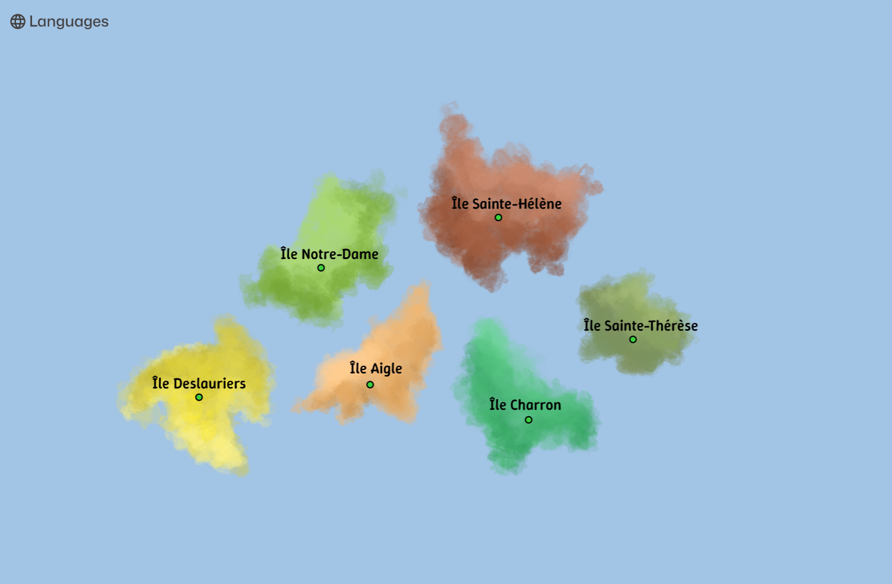
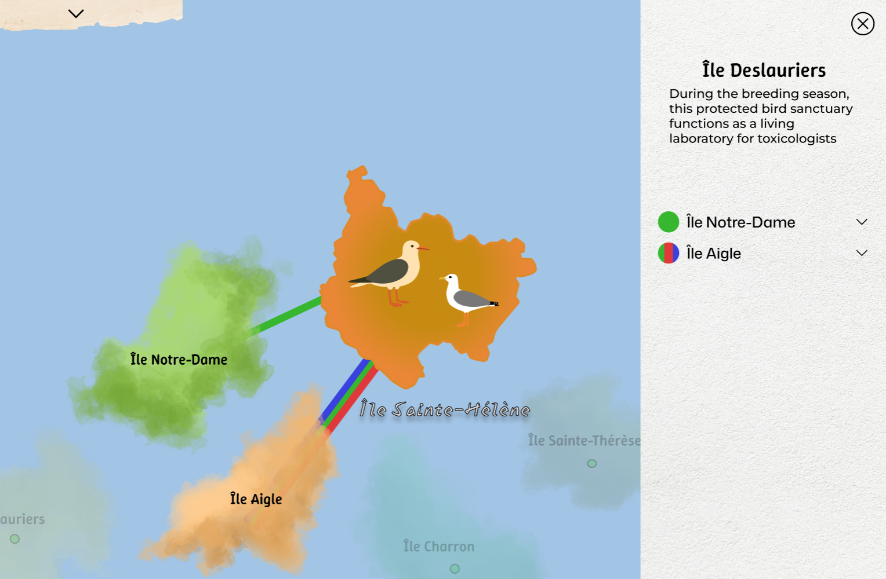
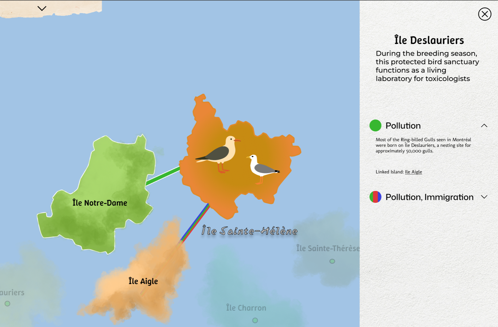
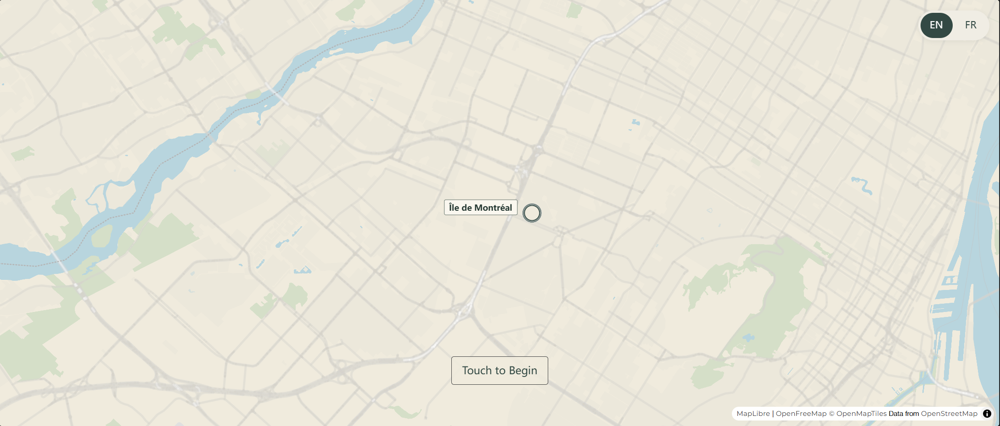
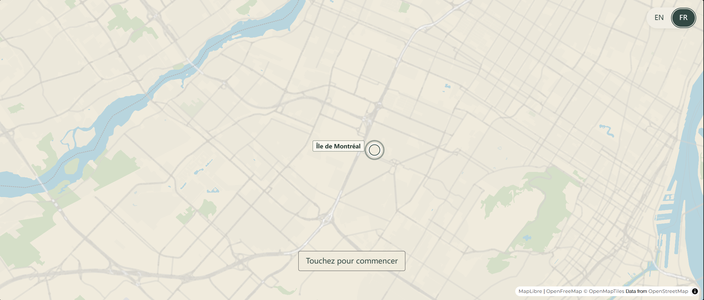
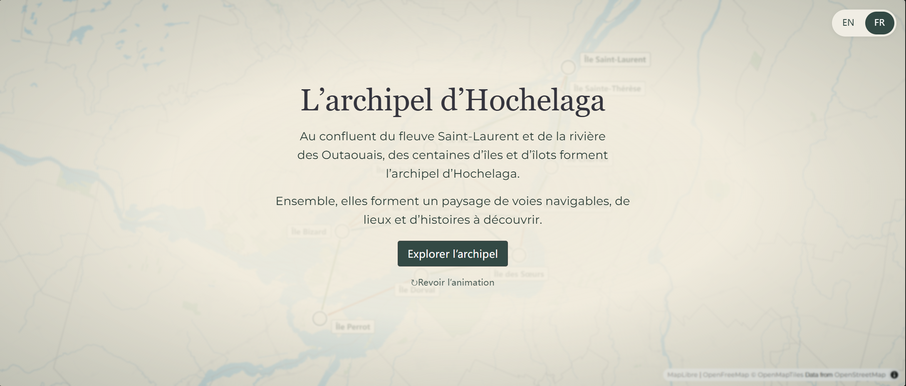
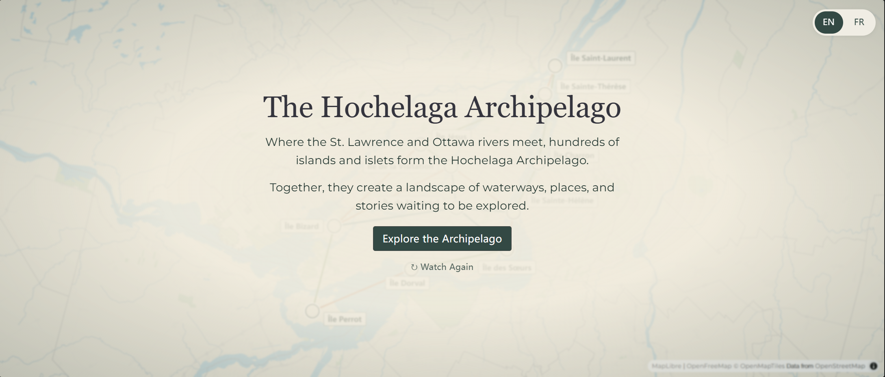

Design Journal
Week 9
Design Journal
Junming He
Hochelaga Archipelago
November 17, 2026
What I Worked On
This week, I mainly worked on two parts of our project. First, I created a new Figma design for the main map, focusing on how island names are presented and how the connections between islands relate to the information panel. Second, I added an English and French language-switching feature to the Opening, considering the geographical context of our project and its potential audience.
Redesigning the Main Map
After reviewing our group's current map design, I noticed that the island names were mainly displayed in a list on the left side of the screen rather than directly on the islands. Although this keeps the map visually clean, I think users may need to constantly look back and forth between the map and the list to identify each island. In my new Figma design, I made the list collapsed by default and placed the island names directly on the islands. Users can still open the list whenever they need it.
There are three main reasons behind this decision:
- Users should be able to know the name of an island before clicking on it.
- Users should not need to constantly shift their attention between the map and the list.
- Displaying the names directly on the islands may help users remember which islands they have already explored.
Through these changes, I want the map itself to become the main way for users to explore the archipelago, while the island list serves as an additional navigation tool.


Connecting the Map with the Information Panel
I also explored how the connection lines between islands could be visually linked to the text in the information panel on the right. When users select an island, they can see its connections to other islands and read about these relationships in the information panel. However, when multiple connections are displayed at the same time, it may not be immediately clear which line corresponds to the information they are currently reading.
To address this issue, I experimented with color matching and highlighting effects in Figma. The color indicators in the information panel match the colors of the corresponding connection lines. When users expand a specific section, the related connection line can be highlighted with a white outline, and the boundary of the connected island can also be highlighted.
Meanwhile, the other connections remain visible so that users do not lose the overall context. My intention is to help users understand which islands and relationships they are currently reading about without having to figure out the connection themselves. In this way, the visual elements on the map become part of the information rather than simply serving as decoration.


Adding Bilingual Support to the Opening
Since our project introduces the Hochelaga Archipelago, which is located in Quebec, I think our audience should not be limited to English speakers. French speakers should also be able to access and understand the experience. Therefore, I added an English and French language-switching feature to the Opening.
When designing this feature, I considered at which points users would actually need to switch languages. I decided to make it available before the animation begins and after it ends. Although there is not much text on the starting screen, the instructions are important because they guide users into the experience. The ending screen, on the other hand, contains more written information introducing the archipelago and guiding users toward the main map. During the animation, most information is communicated through the actual map, island markers, connection lines, and sound effects. Since this part relies less on text, I decided to temporarily hide the language switcher to avoid distracting users from the animation.
For the visual design, I placed the language switcher in the upper-right corner of both screens to maintain consistency. I experimented with different backgrounds, borders, and selected states. The final version uses a light, rounded background with a dark green highlight for the selected language. I wanted the language switcher to be noticeable and easy to recognize without drawing too much attention away from the main content.



